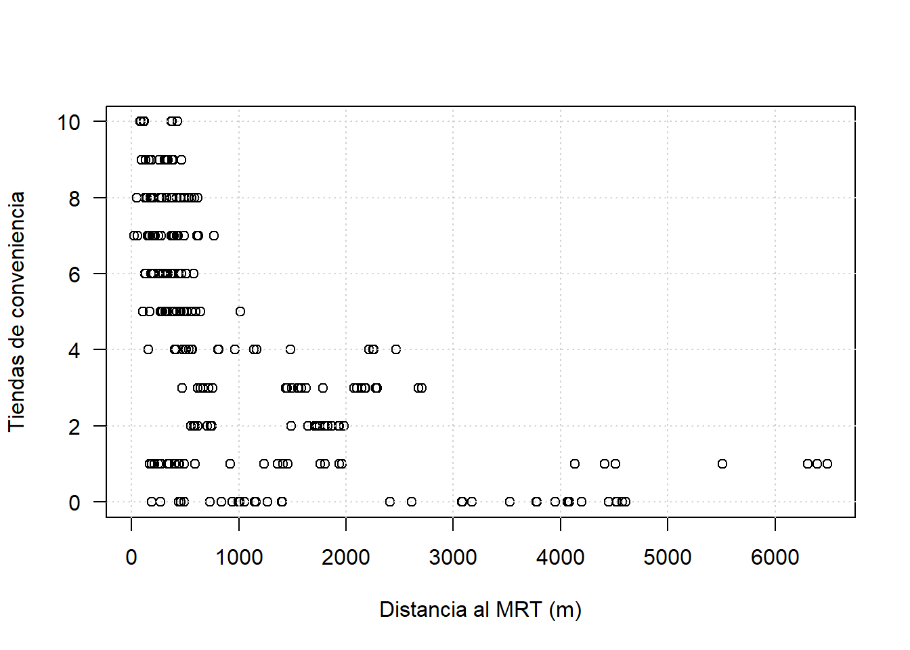

En este método se tiene un conjunto de referencia \((X,y)\), donde \(X\) es una matriz cuyas filas representan individuos y cuyas columnas representan características, y \(y\) es un vector cuyas entradas corresponden a las respuestas asociadas a las filas de \(X\).
Para una nueva observación \(x\), su predicción \(\hat{y}\) se obtiene buscando las \(k\) filas en \(X\) más cercanas a la nueva observación, \(x\), y promediando las respuestas correspondientes (en el caso de la regresión) o tomando la clase más frecuente (en el caso de la clasificación).
A continuación se propone el siguiente conjunto de datos para desarrollar modelos de regresión:
Real estate valuation data set Data Set
Citación: Yeh, I. C., & Hsu, T. K. (2018). Building real estate valuation models with comparative approach through case-based reasoning. Applied Soft Computing, 65, 260-271.
Lectura de la base de datos:
precios <- read.csv("real_estate_valuation_dataset.csv",header = TRUE,sep=";",dec=",")La definición de las variables es la siguiente:
La base tiene la siguiente estructura:
head(precios)## ï..No X1 X2 X3 X4 X5 X6 Y
## 1 1 2012.917 32.0 84.87882 10 24.98298 121.5402 37.9
## 2 2 2012.917 19.5 306.59470 9 24.98034 121.5395 42.2
## 3 3 2013.583 13.3 561.98450 5 24.98746 121.5439 47.3
## 4 4 2013.500 13.3 561.98450 5 24.98746 121.5439 54.8
## 5 5 2012.833 5.0 390.56840 5 24.97937 121.5425 43.1
## 6 6 2012.667 7.1 2175.03000 3 24.96305 121.5125 32.1Selección de la base de datos solo con las variables edad de la casa, distancia al MRT y tiendas de conveniencia cercanas y la variable respuesta:
precios_red<-precios[,c("X2","X3","X4","Y")]Estadísticos de resumen:
summary(precios_red)## X2 X3 X4 Y
## Min. : 0.000 Min. : 23.38 Min. : 0.000 Min. : 7.60
## 1st Qu.: 9.025 1st Qu.: 289.32 1st Qu.: 1.000 1st Qu.: 27.70
## Median :16.100 Median : 492.23 Median : 4.000 Median : 38.45
## Mean :17.713 Mean :1083.89 Mean : 4.094 Mean : 37.98
## 3rd Qu.:28.150 3rd Qu.:1454.28 3rd Qu.: 6.000 3rd Qu.: 46.60
## Max. :43.800 Max. :6488.02 Max. :10.000 Max. :117.50Cálculo de la desviación estándar:
apply(precios_red,2,sd)## X2 X3 X4 Y
## 11.392485 1262.109595 2.945562 13.606488Gráfico de dispersión por pares:
pairs(precios_red)Cálculo de la correlación entre las variables:
cor(precios_red)## X2 X3 X4 Y
## X2 1.00000000 0.02562205 0.04959251 -0.2105670
## X3 0.02562205 1.00000000 -0.60251914 -0.6736129
## X4 0.04959251 -0.60251914 1.00000000 0.5710049
## Y -0.21056705 -0.67361286 0.57100491 1.0000000Gráfica de precios versus la edad de la casa:
plot(precios_red$X2,precios_red$Y,las=1,
xlab="Edad de la casa [años]",
ylab="Precio [log moneda]",
main="Edad de la casa vs Precio",
log="y")
grid()Gráfica de precios versus la distancia al MRT:
plot(precios_red$X3,precios_red$Y,las=1,
xlab="Distancia al MRT [log m]",
ylab="Precio [log moneda]",
main="Distancia al MRT vs Precio",
log="xy")
grid()Precios versus cantidad de tiendas de conveniencia:
boxplot(Y~X4,data=precios_red,
las=1,log="y",
xlab="Tiendas de conveniencia",
ylab="Precio [log moneda]",
main="Tiendas de conveniencia vs precio")library(plotly)hist(precios_red$Y,xlab="Precio",ylab="Frecuencia",las=1,
main="Histograma precio",freq = FALSE)hist_Y<-plot_ly(x=precios_red$Y,type="histogram",
histnorm="probability")
hist_Y<-layout(hist_Y,title='Histograma precio',
# xaxis = list(type = "log"),
xaxis=list(title="Precio"
# ,type="log"
),
yaxis=list(title="Frecuencia rel."))
hist_Y## Warning: `arrange_()` is deprecated as of dplyr 0.7.0.
## Please use `arrange()` instead.
## See vignette('programming') for more help
## This warning is displayed once every 8 hours.
## Call `lifecycle::last_warnings()` to see where this warning was generated.Categorización de la variable respuesta:
precios_red$Y_cat<-cut(precios_red$Y,breaks=c(0,30,50,118),labels=c("bajo","medio","alto"))Esto permite otro tipo de exploración:
boxplot(X3~Y_cat,data=precios_red,las=1,#log="y",
xlab="Precio",
ylab="Distancia al MRT")table(precios_red$Y_cat,precios_red$X4)##
## 0 1 2 3 4 5 6 7 8 9 10
## bajo 48 26 11 28 6 3 1 2 1 0 0
## medio 16 17 12 16 22 41 25 23 23 12 8
## alto 3 3 1 2 3 23 11 6 6 13 2proportions(table(precios_red$Y_cat,precios_red$X4),margin=c(1))*100##
## 0 1 2 3 4 5
## bajo 38.0952381 20.6349206 8.7301587 22.2222222 4.7619048 2.3809524
## medio 7.4418605 7.9069767 5.5813953 7.4418605 10.2325581 19.0697674
## alto 4.1095890 4.1095890 1.3698630 2.7397260 4.1095890 31.5068493
##
## 6 7 8 9 10
## bajo 0.7936508 1.5873016 0.7936508 0.0000000 0.0000000
## medio 11.6279070 10.6976744 10.6976744 5.5813953 3.7209302
## alto 15.0684932 8.2191781 8.2191781 17.8082192 2.7397260chisq.test(table(precios_red$Y_cat,precios_red$X4))## Warning in chisq.test(table(precios_red$Y_cat, precios_red$X4)): Chi-squared
## approximation may be incorrect##
## Pearson's Chi-squared test
##
## data: table(precios_red$Y_cat, precios_red$X4)
## X-squared = 189.14, df = 20, p-value < 2.2e-16precios_red$edad<-cut(precios_red$X2,breaks=c(0,5,10,50),labels = c("casi_nueva","usada","vieja"),right = FALSE)precios_red$tiendas<-cut(precios_red$X4,breaks=c(0,3,6,11),labels = c("bajo","medio","alto"),right = FALSE)table(precios_red$Y_cat,precios_red$tiendas)##
## bajo medio alto
## bajo 85 37 4
## medio 45 79 91
## alto 7 28 38cuts_dMRT<-quantile(precios_red$X3,probs = c(0,0.25,0.75,1))
precios_red$dMRT<-cut(precios_red$X3,breaks=cuts_dMRT,labels = c("cerca","medio","lejos"),include.lowest=TRUE)set.seed(20200513)
N<-dim(precios_red)[1] # tamaño de la muestra original
p<-0.2 # fracción reservada para validación
id_vl<-sample(N,round(N*p),replace = FALSE)
datos_vl<-precios_red[id_vl,]
datos_tr<-precios_red[-id_vl,]library(OneR)modelos_onerule<-OneR(Y_cat~edad+tiendas+dMRT,data=datos_tr) # Modelo con variables categóricas
# modelos_onerule<-OneR(Y~X2+X3+X4,data=datos_tr) # Modelo con variables numéricassummary(modelos_onerule)##
## Call:
## OneR.formula(formula = Y_cat ~ edad + tiendas + dMRT, data = datos_tr)
##
## Rules:
## If dMRT = cerca then Y_cat = medio
## If dMRT = medio then Y_cat = medio
## If dMRT = lejos then Y_cat = bajo
##
## Accuracy:
## 226 of 331 instances classified correctly (68.28%)
##
## Contingency table:
## dMRT
## Y_cat cerca medio lejos Sum
## bajo 3 31 * 63 97
## medio * 46 * 117 14 177
## alto 41 16 0 57
## Sum 90 164 77 331
## ---
## Maximum in each column: '*'
##
## Pearson's Chi-squared test:
## X-squared = 187.58, df = 4, p-value < 2.2e-16¿Están todos los tipos de casas igualmente representados? Probablemente no. Las casas caras son más escasas. El desbalanceo de los datos puede estar llevando a un sesgo.
Se cuenta con 414 registros. Se tomará el 25% para validación. Para que este script sea reproducible se fija el valor de la semilla antes de simular números aleatorios:
n<-dim(precios_red)[1]
n_vl<-round(n*0.25)
set.seed(20190930) # Se fija la semilla para obtener
# resultados reproducibles
ix_vl<-sample(1:n,n_vl,replace = FALSE)
X_tr<-precios_red[-ix_vl,c("X2","X3","X4")]
X_vl<-precios_red[ix_vl,c("X2","X3","X4")]
Y_tr<-precios_red$Y[-ix_vl]
Y_vl<-precios_red$Y[ix_vl]La siguiente función encuentra los \(k\) vecinos más cercanos y promedia sus respuestas conrrespondientes:
fknn<-function(x,k,X_tr,Y_tr){
# x: observación a predecir
# k: cuántos vecinos más cercanos se deben hallar
# X0: dataframe o matriz con los datos de entrenamiento
# Y0: respuesta asociada a X0
xX<-rbind(x,X_tr) # Se concatenan x y X
distancias<-as.matrix(dist(xX)) # Se calcula la matriz de distancias y se convierte a la clase matrix
d_vec<-distancias[1,-1] # Se selecciona la columna 1 que corresponde a todas las distancias con respecto a x
orden<-sort(d_vec,index.return=TRUE) # Se ordenan las distancias en forma ascendente
k_vecinos<-orden$ix[1:k] # se obtienen los índices de los k vecinos más cercanos
respuestas_knn<-Y_tr[k_vecinos] # se extraen las respuestas correspondientes a los k vecinos más cercanos
r_knn<-mean(respuestas_knn) # se promedian las respuestas de los k vecinos más cercanos
return(r_knn)
}Prueba de la función:
fknn(x=X_vl[1,],k=3,X_tr=X_tr,Y_tr=Y_tr)## [1] 32.33333Esta forma no es tan eficiente en R, pero conviene ilustrar su uso:
Y_vl_pred<-rep(NA,n_vl) # se crea un vector que alojará el cálculo de las predicciones
for (i in 1:n_vl){
Y_vl_pred[i]<-fknn(x=X_vl[i,],k=3,X_tr=X_tr,Y_tr=Y_tr)
}La familia de funciones apply proporciona una mejor alternativa para aplicar métodos iterativos:
Y_vl_pred<-apply(X_vl,1,fknn,k=3,X_tr=X_tr,Y_tr=Y_tr)Cálculo del MSE:
MSEk3<-mean((Y_vl_pred-Y_vl)^2)
MSEk3## [1] 102.5929Gráfico de valores predichos vs observados para k=3:
par(pty="s")
plot(Y_vl_pred,Y_vl,xlab="Predichos [moneda]",ylab="Observados [moneda]",las=1)
abline(a=0,b=1,lwd=2)
grid()A continuación se encuentra el número de vecinos óptimo variando \(k\) y obteniendo para cada valor el MSE en el conjunto de validación.
Para ello se crea primero una función que se pueda invocar fácilmente con apply:
mse_knn_k<-function(k,X_tr,Y_tr,X_vl,Y_vl){
Y_vl_pred<-apply(X_vl,1,fknn,k=k,X_tr=X_tr,Y_tr=Y_tr)
MSEk<-mean((Y_vl_pred-Y_vl)^2)
return(MSEk)
}Prueba de la función:
mse_knn_k(k=3,X_tr=X_tr,Y_tr=Y_tr,X_vl=X_vl,Y_vl=Y_vl)## [1] 102.5929Ahora se aplica la función para un rango de valores de \(k\) entre 1 y 100:
k<-1:100
mse_vl_k<-sapply(k,mse_knn_k,X_tr=X_tr,Y_tr=Y_tr,X_vl=X_vl,Y_vl=Y_vl)Gráfica del MSE vs \(k\):
plot(k,mse_vl_k,xlab="Número de vecinos",ylab="MSE de validación",las=1,type = "l")
grid()La normalización de los datos puede mejorar el desempeño de la técnica y reducir la variabilidad del error de validación.
Para normalizar se puede restar la media de cada variable y dividir por su desviación estándar. Esto puede hacerse con la función scale:
precios_red_cent<-scale(precios_red[,c("X2","X3","X4","Y")],center=TRUE,scale=TRUE)
centro<-attr(precios_red_cent,"center")
escala<-attr(precios_red_cent,"scale")
precios_red_cent<-as.data.frame(precios_red_cent)Obtengamos el diagrama de dispersión por pares de los datos normalizados:
pairs(precios_red_cent)Ahora entrenemos el modelo con los datos normalizado Para ello dividamos el conjunto normalizado en entrenamiento y validación:
n<-dim(precios_red)[1]
n_vl<-round(n*0.25)
set.seed(20190930) # Se fija la semilla para obtener
# resultados reproducibles
ix_vl<-sample(1:n,n_vl,replace = FALSE)
X_tr<-precios_red_cent[-ix_vl,c("X2","X3","X4")]
X_vl<-precios_red_cent[ix_vl,c("X2","X3","X4")]
Y_tr<-precios_red_cent$Y[-ix_vl]
Y_vl<-precios_red_cent$Y[ix_vl]Ahora, obtengamos nuevamente el MSE en función de \(k\):
k<-1:100
mse_vl_k<-sapply(k,mse_knn_k,X_tr=X_tr,Y_tr=Y_tr,X_vl=X_vl,Y_vl=Y_vl)Gráfica del MSE vs \(k\) para los datos normalizados:
plot(k,mse_vl_k,xlab="Número de vecinos",ylab="MSE de validación",las=1,type = "l")
grid()El paquete caret contiene una serie de funciones para el entrenamiento de métodos de aprendizaje de máquina.
A continuación se entrena un modelo de los \(k\) vecinos más cercanos utilizando las funciones train() y trainControl():
library(caret)
set.seed(2019092)
ctrl<-trainControl(method = "LGOCV",p=0.75,number = 20)
modelo_entrenamiento<-train(Y ~ X2+X3+X4,
data = precios_red,
method = "knn",
preProcess = c("center","scale"),
tuneGrid = expand.grid(k = 1:30),
trControl = ctrl,
metric = "RMSE")print(modelo_entrenamiento)## k-Nearest Neighbors
##
## 414 samples
## 3 predictor
##
## Pre-processing: centered (3), scaled (3)
## Resampling: Repeated Train/Test Splits Estimated (20 reps, 75%)
## Summary of sample sizes: 312, 312, 312, 312, 312, 312, ...
## Resampling results across tuning parameters:
##
## k RMSE Rsquared MAE
## 1 9.905815 0.5474593 6.229655
## 2 8.852191 0.5987048 5.812850
## 3 8.687407 0.6044412 5.673517
## 4 8.725091 0.5981017 5.709287
## 5 8.776102 0.5917692 5.802278
## 6 8.817465 0.5873599 5.876139
## 7 8.778098 0.5906457 5.895366
## 8 8.821210 0.5852639 5.968680
## 9 8.786022 0.5859482 5.955979
## 10 8.794352 0.5832352 5.967602
## 11 8.765216 0.5851013 5.958356
## 12 8.741871 0.5865283 5.937460
## 13 8.746952 0.5859650 5.950882
## 14 8.759576 0.5846145 5.960118
## 15 8.776896 0.5831229 5.979916
## 16 8.773926 0.5833470 5.964186
## 17 8.768257 0.5837793 5.965848
## 18 8.771068 0.5833120 5.955491
## 19 8.755168 0.5845389 5.936277
## 20 8.760728 0.5838047 5.929834
## 21 8.771969 0.5825002 5.930252
## 22 8.772221 0.5824053 5.929194
## 23 8.785903 0.5810477 5.928584
## 24 8.810605 0.5786875 5.935624
## 25 8.832897 0.5766542 5.943779
## 26 8.863619 0.5739850 5.970941
## 27 8.876060 0.5729557 5.985691
## 28 8.882749 0.5725029 5.987131
## 29 8.917127 0.5694100 6.023722
## 30 8.938098 0.5672908 6.054798
##
## RMSE was used to select the optimal model using the smallest value.
## The final value used for the model was k = 3.Gráfico del RMSE vs k:
plot(modelo_entrenamiento)Importancia de las variables:
importancia<-varImp(modelo_entrenamiento)
dotPlot(importancia)Explicado en StackOverFlow
require(caret)
set.seed(2019092) # Se fija la semilla para obtener resultados reproducibles.
# Se configura el método de selección de variables. Se utiliza K-fold cross-validation con K=10.
rctrl1 <- rfeControl(method = "cv",
number = 10,
returnResamp = "all",
functions = caretFuncs,
saveDetails = TRUE)
# Selección de variables. Se configuar para obtener el mejor modelo con 1 y con 2 variables (sizes=c(1,2)):
model_select <- rfe(Y ~ ., data = precios_red,
sizes = c(1,2),
method = "knn",
metric = "RMSE",
preProcess = c("center","scale"),
trControl = trainControl(method = "cv",number = 10),
tuneGrid = data.frame(k = 1:10),
rfeControl = rctrl1)print(model_select)##
## Recursive feature selection
##
## Outer resampling method: Cross-Validated (10 fold)
##
## Resampling performance over subset size:
##
## Variables RMSE Rsquared MAE RMSESD RsquaredSD MAESD Selected
## 1 9.105 0.5903 6.504 2.845 0.13505 1.3621
## 2 7.058 0.7396 5.089 2.006 0.08042 0.7502
## 11 5.794 0.8258 3.991 2.152 0.08190 0.7781 *
##
## The top 5 variables (out of 11):
## X3, Y_catalto, dMRTlejos, X4, X2plot(model_select, type = c("g", "o"))Para ilustrar los gráficos de superficie se entrenará un modelo con las mejores dos variables, \(X3\) y \(X4\):
library(caret)
set.seed(2019092)
ctrl<-trainControl(method = "cv",number = 10)
modelo_X3X4<-train(Y ~ X3+X4,
data = precios_red,
method = "knn",
preProcess = c("center","scale"),
tuneGrid = expand.grid(k = 1:30),
trControl = ctrl,
metric = "RMSE")El resultado del modelo es el siguiente:
plot(modelo_X3X4)Observemos que los datos fueron preprocesados internamente usando los siguientes valores de medias y varianzas:
(medias<-modelo_X3X4$preProcess$mean)## X3 X4
## 1083.885689 4.094203(dsv_es<-modelo_X3X4$preProcess$std)## X3 X4
## 1262.109595 2.945562Para graficar la superficie de respuesta se obtienen las predicciones del modelo en un rango de valores típicos de \(X3\) y \(X4\). Primero se generan los valores típicos de las variables y luego, con el comando expand.grid() se generan todas las posibles combinaciones. El resultado final se guarda en un dataframe, llamado aquí newdata, que se usará para la predicción:
X3<-seq(min(precios_red$X3),max(precios_red$X3),length.out = 100)
X4<-0:10
newdata<-expand.grid(X3,X4)
names(newdata)<-c("X3","X4")precios_predichos<-predict(modelo_X3X4,newdata = newdata)
newdata$Y<-precios_predichos
z<-matrix(precios_predichos,ncol=length(X4),nrow = length(X3))par(mar=c(6,8,4,2),mgp=c(5,1,0))
z_img<-t(z)
image(z_img,xaxt='n',yaxt='n',xlab="Tiendas de conveniencia",ylab="Distancia al MRT (m)",col=gray.colors(20,rev=TRUE))
labelsX3<-format(X3, digits = 4,decimal.mark = ",",big.mark = " ")
axis(2,at=seq(0,1,by=1/(length(X3)-1)),labels =labelsX3,las=2)
axis(1,at=seq(0,1,by=1/(length(X4)-1)),labels=X4,las=2)
persp(X3,X4,z,xlab="Distancia al MRT",ylab="Tiendas de conveniencia",zlab="Precio",main="Superficie de respuesta para un modelo con dos variables",theta=45,shade=0.3)library(plotly)p <- plot_ly(x=X4,y=X3,z = z)
p <- add_surface(p)
p<-layout(p,title='Precio vs dis MRT y número de comercios',
xaxis=list(title="Cantidad de comercios"),
yaxis=list(title="Distancia al MRT (m)"))
pplot(precios_red$X3,precios_red$X4,xlab="Distancia al MRT (m)",ylab="Tiendas de conveniencia",las=1)
grid()